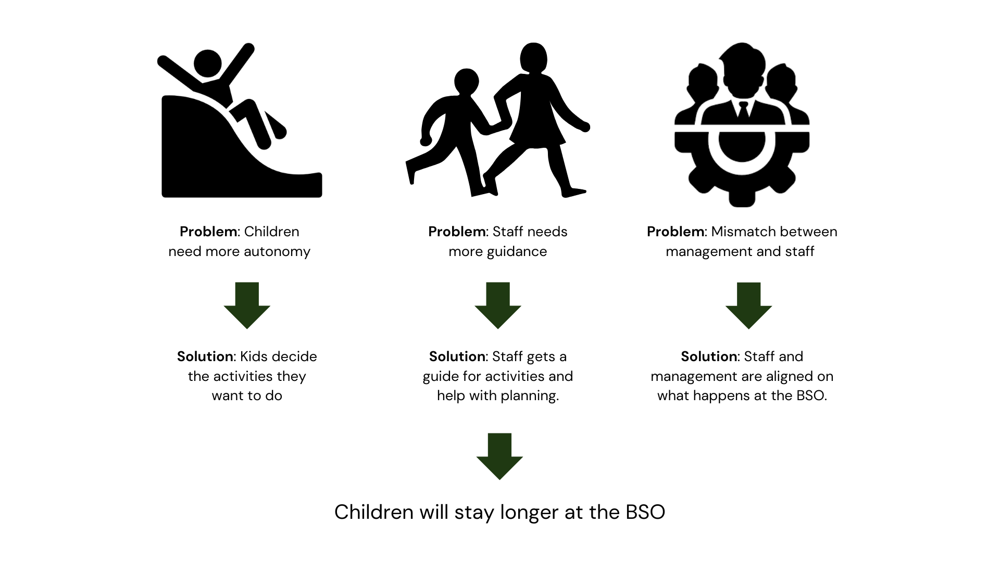

The Completed Ecosystem.
The final result and Norlympics ecosystem is depicted below:

The finalized Norlympics framework successfully bridges the gaps between child autonomy, staff support, and organizational goals. By directly answering child autonomy with user-led challenge voting, teacher prep with lightweight playbooks, and structural communication with a unified regional framework, our interventions directly target the ultimate goal: keeping children engaged and excited to stay longer at the BSO.

Final Reflection.
Working on this project showed me how a user-centered service design strategy can bring high-level organizational goals and daily childcare practices closer together. By connecting operational insights with the actual needs on the floor, we helped Norlandia make their Scandinavian pedagogical vision tangible. The concept shifts the focus away from standalone, mandatory activities and introduces a shared, motivating tournament framework. Ultimately, this approach helped unlock the potential of their facilities, transforming after-school care into an active, collaborative space that genuinely celebrates the autonomy of the older child.